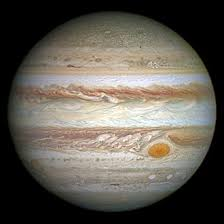
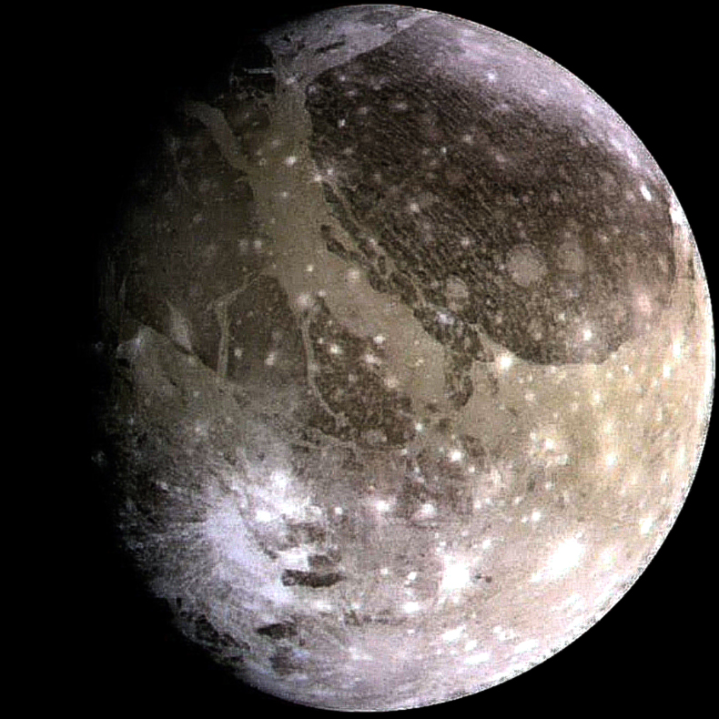

- It has 69 moons in toal and faint rings
- It can't support life, but one of it's moons might be able to
- It could have been a star, but it didn't grow big enough
- It has the largest ocean (of hydrogen instead of water)

Jupiter

Jupiter's Great Red Spot

Jupiter's largest moon, Ganymede